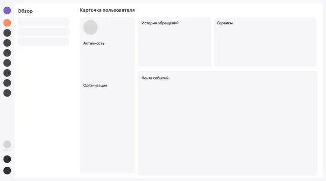
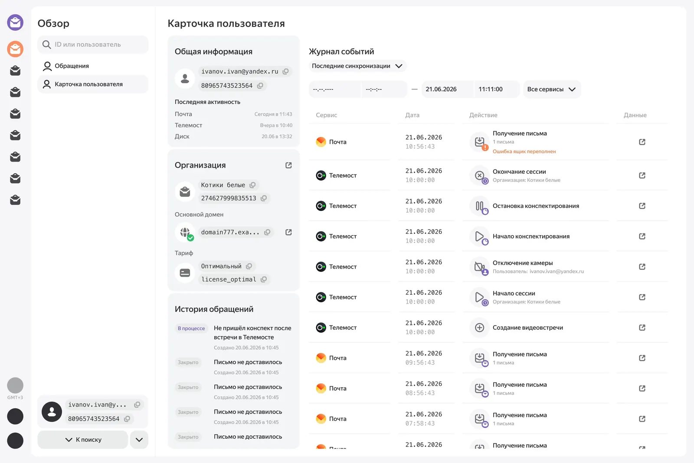
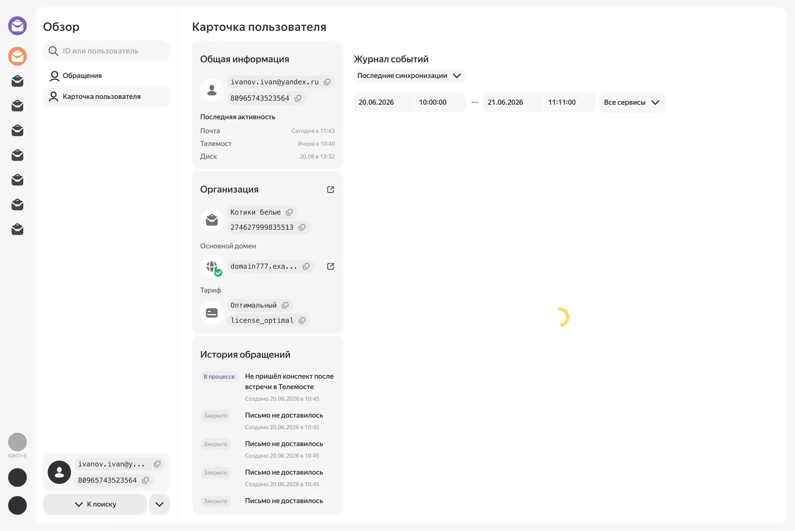
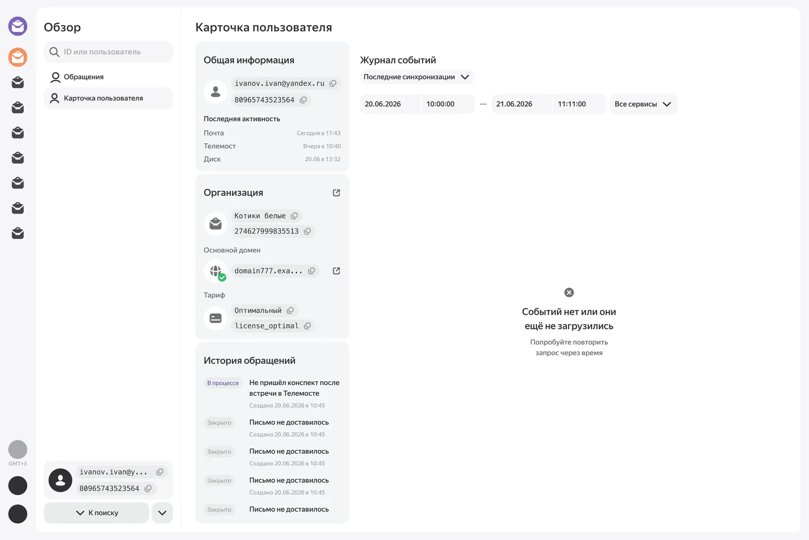
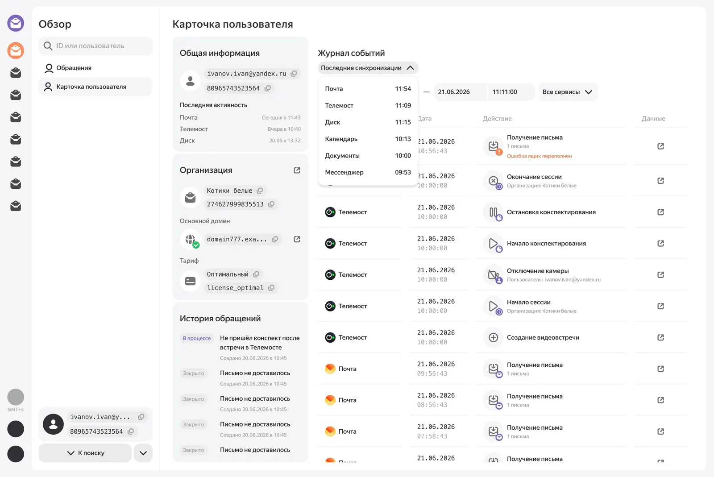
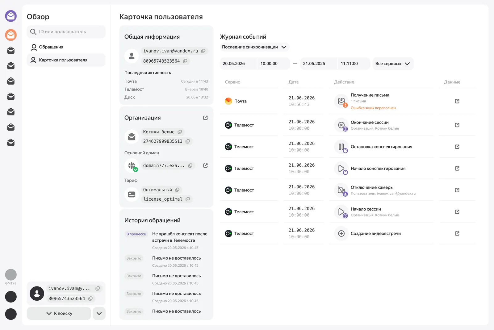
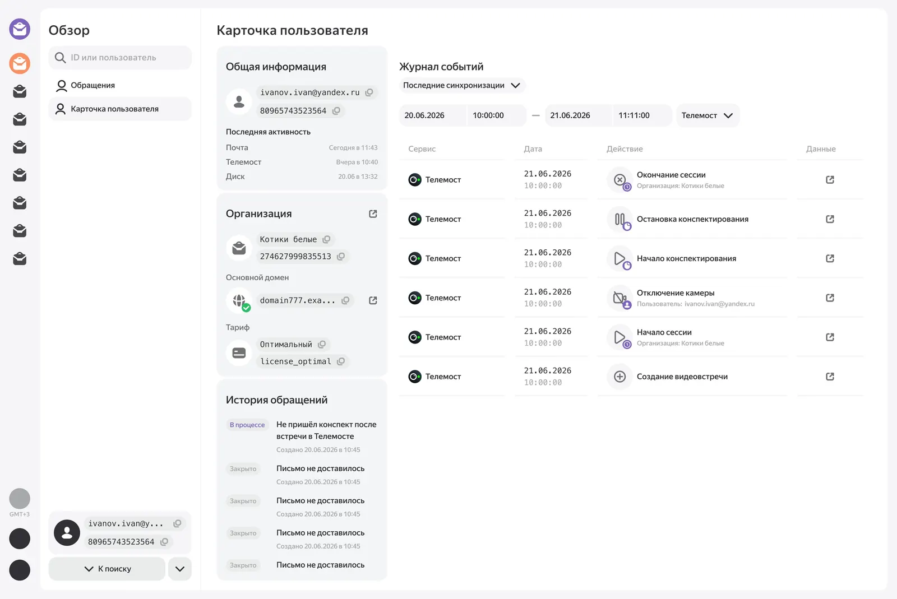
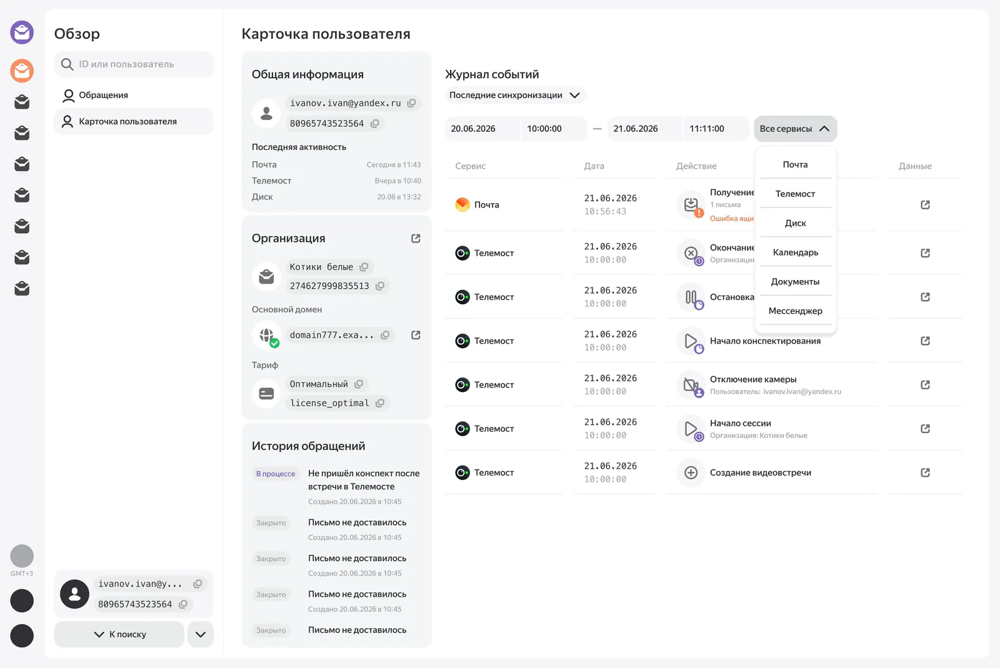

www.ncocu.space

Интерфейс быстрой обработки обращений для сотрудников поддержки
Проектирование интерфейса, объединяющего данные нескольких сервисов Яндекс 360 для сокращения времени обработки обращений
Роль
Продуктовый дизайнер
Тип проекта
Учебный кейс
Год
2026
Инструменты
Figma
Контекст
Сотрудники поддержки работают сразу в нескольких административных интерфейсах. Чтобы разобраться в одном обращении, им приходится переключаться между Почтой, Телемостом, организацией и другими сервисами. Это увеличивает время обработки обращения
Задача
Спроектируйте страницу в админке по пользователю, которая поможет сотруднику быстро получить общую информацию о пользователе по сервисам Яндекс 360
Интерфейс должен помогать:
♡ Сформировать представление о пользователе
♡ Оценить использование сервисов пользователем
♡ Понимать контекст последних обращений в поддержку
♡ Уменьшить количество переходов в другие админки
Интерфейс должен помогать:
♡ Сформировать представление о пользователе
♡ Оценить использование сервисов пользователем
♡ Понимать контекст последних обращений в поддержку
♡ Уменьшить количество переходов в другие админки
Ограничения
♡ Данные могут приходить из разных систем с задержкой
♡ Данные могут быть неполными
♡ Ширина экрана — 1366px
♡ Данные могут быть неполными
♡ Ширина экрана — 1366px
Боль сотрудника поддержки
♡ Постоянное переключение контекста, разные админки севисов
♡ Нет общей картины
♡ Данные живут отдельно, каждый сервис знает только про себя
♡ Не всегда есть данные
Высокая когнитивная нагрузка
♡ Нет общей картины
♡ Данные живут отдельно, каждый сервис знает только про себя
♡ Не всегда есть данные
Высокая когнитивная нагрузка
Боль бизнеса
♡ Поддержка тратит слишком много времени на обработку обращений
♡ Увеличивается время ответа пользователю
♡ Увеличивается стоимость обработки обращения
♡ Падает продуктивность сотрудников
♡ Увеличивается время ответа пользователю
♡ Увеличивается стоимость обработки обращения
♡ Падает продуктивность сотрудников
Идеи и гипотезы
♡ Создать интерфейс вмещающий первые необходимые данные для обработки обращения, чтоб не открывать несколько админок и меньше между ними переключатся
♡ Подсказывать, подмечать что не так, для упрощения поиска проблемы, чтобы не искать вручную и помнить что проверить
♡ Показать историю последних действий в сервисах, для понимания общей картины
♡ Сделать раздел показа обновлений данных из систем, чтобы закрыть ограничения неполных данных или с задержкой
♡ Создать интерфейс легким в освоении новым сотрудникам и уже дествующим
♡ Подсказывать, подмечать что не так, для упрощения поиска проблемы, чтобы не искать вручную и помнить что проверить
♡ Показать историю последних действий в сервисах, для понимания общей картины
♡ Сделать раздел показа обновлений данных из систем, чтобы закрыть ограничения неполных данных или с задержкой
♡ Создать интерфейс легким в освоении новым сотрудникам и уже дествующим
Варфрейм

У решения было много прототипов прежде чем придти к нужному результату они находятся в фигме
Мое решение
Переработала скриншоты из разных админок в удобное первое впечатление о пользователе, сохраняя паттерны и дизайн систему существующей системы, новые так и старые пользователи смогут хорошо по ней ориентироваться без обучения. Я разработала новую таблицу для конкретно этого экрана, она легко масштабируется на каждое разрешения и показывает максимум возможной для ознокомления с обращением информации. Экран закрывает первые потребности в обработке обращения и показывает ошибки в действиях если такие имеются, как на изображении ниже

Работа с неполными данными
После ввода данных, дате или сортировке начинается загрузка

После которой будет полная таблица с данными или ошибка как на экране ниже, что говорит об отсутствии данных или не загрузившихся

Когда было последние обновление данных из систем можно посмотреть в “Последние синхронизации” там будет время последнего обновления

Сортировка событий
Сортировать можно по дате и сервисам, это самые первые критерии по которым можно отследить ошибку у пользователя, на экране ниже показана сортировка по времени

Сортировка по сервисам, выбор сервиса и отображение представлены ниже


Юзабилити тестирование
Чтобы проверить, насколько быстро новый интерфейс позволяет разобраться с межсервисным обращением, я провела качественную проверку прототипа
Задача участников
Найти причину, по которой пользователь не получил конспект после встречи в Телемосте, используя только новый интерфейс
Все 5 участников ранее не работали с админками Яндекс 360 и не были знакомы со спецификой работы поддержки
Результат
Время выполнения сценария — около 3 минут
При этом им не потребовалось предварительное объяснение структуры интерфейса
При этом им не потребовалось предварительное объяснение структуры интерфейса
Обратная связь одного участника
«Интерфейс интуитивно понятный, сразу видно основные данные и понятно, куда смотреть»
«Интерфейс интуитивно понятный, сразу видно основные данные и понятно, куда смотреть»
Это показало, что даже без опыта работы с системой пользователь смог
♡ Определить, где искать контекст обращения
♡ Использовать историю событий для восстановления последовательности
♡ Связать события разных сервисов
♡ Найти возможную причину проблемы
♡ Понять, куда перейти за дополнительной информацией
Что подтверждает первоначальную гипотезу о том, что интерфейс легкий в освоении новым сотрудникам и уже действующим, а также вызывает меньше когнетивной нагрузки
♡ Определить, где искать контекст обращения
♡ Использовать историю событий для восстановления последовательности
♡ Связать события разных сервисов
♡ Найти возможную причину проблемы
♡ Понять, куда перейти за дополнительной информацией
Что подтверждает первоначальную гипотезу о том, что интерфейс легкий в освоении новым сотрудникам и уже действующим, а также вызывает меньше когнетивной нагрузки
Что бы я сделала в следующих итерациях
Если бы работа над продуктом продолжилась, я бы провела интервью с сотрудниками поддержки и изучила реальные сценарии обработки обращений, для большего понимания задачи и углубленной работы, поняла бы как еще можно оптимизировать или добавить новые фичи, например
♡ Возможность автоматически находить проблему, отображать её
♡ Вместо перехода на другие админки из таблицы сделать всплывающий поп ап или документ предоставляющий всю информацию без перехода
♡ Юзабилити тестирование на сотрудниках поддержки
♡ Вместо перехода на другие админки из таблицы сделать всплывающий поп ап или документ предоставляющий всю информацию без перехода
♡ Юзабилити тестирование на сотрудниках поддержки
60 fps